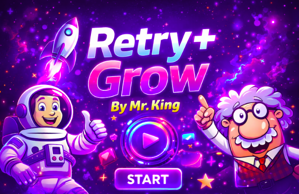

by—Edgardo Sanabria Santaliz
After the Hurricane (May June 2023 passage)-
The truck appeared as soon as the sun set, bursting into the plaza from some street through which the nocturnal wave of murkiness and stars advanced.
At once it proceeded to circle the tree-lined rectangle a number of times - secret, stealthy - like an animal searching for somewhere to rest.
The old men sitting in a row on the long half-moon shaped concrete bench turned their heads in time to see it make its slow entrance.
It passed in front of them (its dark blue brimming with shoals of luminescent decal art) and, turning off the headlights, stopped to one side of an arbour blown over a short while before by the hurricane.
It was the same enormous, outlandish truck that had gone through the pueblo that afternoon, deafening everyone with its loudspeaker; it would have been easy to follow it by ear through the maze of streets.
It was a navy blue truck, covered with decals of fish, that ended by circling around and around the plaza, from where the echo reverberated, moving away through the series of side streets that fed onto it.
Then the truck had gone into one of them and disappeared, creating an unusual momentary silence everywhere, as if it had robbed the entire village of sound.
Now it was here again, and a man got out, who seemed with his glance to take in the atmosphere of the public park and the white heights of the temple, dotted with already sleeping doves.
He moved towards the back part of the vehicle and struggled with the doors for a while.
From inside he brought out several bolts of a greyish material that he unrolled on the ground.
In about an hour the bolts proved to be canvas, forming a small tent attached to the truck.
The entrance to this sort of country house was covered with an arch of multi-colored light bulbs that, once turned on, outlined three shining words: THE BEAUTIFUL MELUSINE, in the black air of the night.
At once the man went inside, like a mollusc into the shell, and he didn't show himself again until the town clock struck eight.